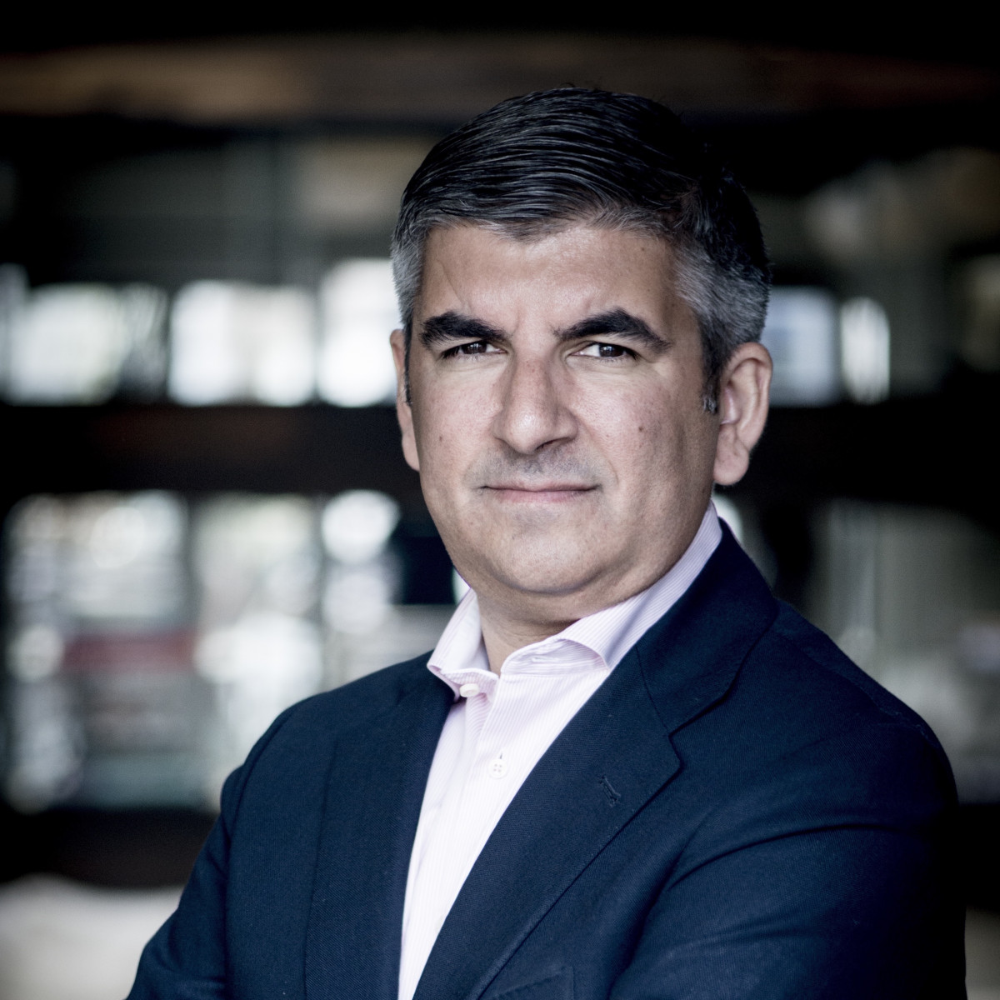

Nuestros inicios
En el año 1995, una destacada agrupación de jóvenes graduados frescos de la carrera de
Administración de Empresas (hoy reconocidos como Accionistas Mayoritarios), demostraron una admirable
combinación de coraje y resolución al embarcarse en la emocionante travesía de iniciar un emprendimiento en
tierras argentinas.
Estos visionarios emprendedores, dignos de admiración, son los siguientes:
Francisco Perez Grassi
Nacido en los ochenta y graduado de la Facultad de Ciencias Económicas en el 2006, Francisco se convirtió en el Accionista principal mas joven del grupo. Nacido en Morón, El y su familia atravesaron una devastadora situacion de crisis económica. En el 2001 consiguió empleo en Fast Food S.A, en el sector de la cocina. Cuando se recibió, decidió invertir todo su capital en la empresa. Desde trabajar como empleado, ascendió como uno de los accionistas mas importantes.
Diego Bulacio
Diego siempre fué el tipico amiguero y fan de las fiestas. Nacido en Misiones, Posadas, siempre
pensó que podria vivir una vida tranquila. Lamentablemente, sus padres sufrieron un catastrófico accidente y
tuvo que valerse de sus propios medios.
En los años 85 y con tan solo 15 años, se mudó con sus
primos a Buenos Aires, donde trabajaba como repositor en un supermercado. Recibido con honores en el año
1995 y junto Patricio López y Natalia Salvo, fundaron la primera sucursal de Fast Food S.A en Recoleta.
Natalia Salvo
Durante muchos años, Natalia siempre estuvo entusiasmada por descubrir que le deparaba tras las
enormes montañas de su querida Ushuaia. A sus 20 años, ahorró lo suficiente para poder viajar a la gran
Buenos Aires y probar suerte alla. Su pequeño pueblo le sentaba demasiado chico para ella.
En el 95
se recibio en la facultad de Economicas y junto Diego Bulacio y Patricio Lopez, fundaron S.A
Patricio López
Patricio nació en Salta, en una situación económica brutal. Su mas grande deseo era el de
recorrer el pais, tal fue que, a sus 15 años, se embarcó con su tio de travesía por el pais.
Para
bien o para mal, su travesia habia terminado antes de tiempo, en Buenos Aires. Al ver que no habia vuelta
atras, decidio buscar trabajo y empezar a estudiar en la Universidad.
Información
Hoy dia, Fast Food S.A cuenta con mas de 150 empleados, distribuidos entre los sectores de
Logistica, Administración General, Abastecimiento y Recursos Humanos.
Gracias a ustedes, este sueño
de ofrecer un producto de una excelente calidad a muy buenos precios es posible solo gracias a ustedes.
¡Sigamos Juntos!